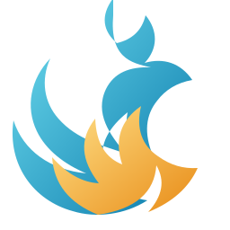

Heal
Listen and connect people with appropriate health, counselling and peer support.

RISE AGAIN INITIATIVEWe walk alongside people and families affected by addiction — connecting them with compassionate support, appropriate care and opportunities to rebuild a meaningful future.
Help someone rise Explore our workYOU ARE NOT ALONE. THERE IS HOPE.
Rise Again Initiative is a community-focused NGO working to support people affected by substance use and related life challenges. We believe every person deserves dignity, practical support and the opportunity to reconnect with family and community.
Our approach is person-centred: listen without judgement, connect people to appropriate professional care, strengthen support networks and create routes towards education, skills and meaningful participation.
We meet people with respect, support them with care and welcome them into stronger community life.
Listen and connect people with appropriate health, counselling and peer support.
Strengthen routines, family connection, practical skills and achievable goals.
Support reconnection with education, work, relationships and community.
Programmes are delivered directly or through qualified local partners, according to capacity and safeguarding standards.
Recovery is personal. This pathway is a guide, not a one-size-fits-all treatment plan.
A private conversation to understand needs.
Connect with qualified health and support services.
Develop routines, relationships, skills and goals.
Build lasting support and community participation.
We prioritise quality, dignity, safeguarding and transparent reporting — not invented impact statistics.
Support outreach, events, communications, mentoring or operations.
Volunteer →Fund a programme, sponsor outreach or open skills pathways.
Partner →Help create a compassionate community around people and families.
Connect →Donation intentions are securely recorded when the backend is activated. No payment is taken until a verified gateway is configured.
Roles are subject to orientation, safeguarding requirements and appropriate supervision. Clinical services may only be provided by qualified professionals.
Ethical, accountable partnerships that protect dignity and wellbeing.
Learn how substance use affects health, relationships and daily life without blame or stigma.
Start with listening, compassionate boundaries and qualified advice.
Speak with a qualified health professional about evidence-informed treatment.
We share stories only with informed consent and protect each person's identity, privacy and dignity.
“Real people. Real support. Real change.”
Kampala, Uganda
Organisation contact details to be configured in config.js.
This is not a medical provider. Diagnosis, detoxification and treatment must be delivered by qualified professionals.
Yes. Non-clinical roles may include events, administration, communications and practical support, subject to orientation and safeguarding.
Donations must be processed through approved channels, receipted and accounted for under transparent financial controls.
Personal information is handled under the published privacy notice and access controls. Do not submit detailed medical histories through general enquiry forms.